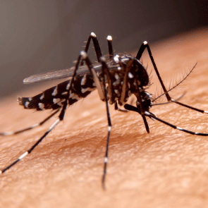

Understanding Mosquitoes: Their Behavior, Risks, and Effective Prevention

Mosquitoes, often dismissed as mere nuisances, play a significant role in the ecosystem. While their high-pitched buzz and itchy bites can be bothersome, mosquitoes are far more than just pesky insects. This article delves into the intriguing world of mosquitoes, exploring their behavior, potential health risks, and effective prevention methods.
The Life of a Mosquito
Mosquitoes undergo a fascinating life cycle, consisting of four stages: egg, larva, pupa, and adult. Standing water serves as their breeding ground, making it crucial to eliminate stagnant water sources around homes. Understanding this life cycle is essential for effective mosquito control.
The Buzz on Mosquito Behavior
Female mosquitoes are the culprits behind those itchy bites, as they require a blood meal to develop their eggs. Mosquitoes are attracted to the carbon dioxide, body heat, and certain chemicals emitted by humans. They are most active during dawn and dusk. Learning about their behavior helps individuals take proactive measures to avoid mosquito bites.
Health Risks Associated with Mosquitoes
While the itchy discomfort of mosquito bites is familiar, these insects pose more severe health risks. Mosquitoes are vectors for various diseases, including malaria, dengue fever, Zika virus, and West Nile virus. Understanding the potential health threats associated with mosquitoes highlights the importance of prevention.
Effective Mosquito Prevention Strategies
Protecting oneself from mosquito-borne diseases involves implementing effective prevention strategies. Here are some practical tips:
- Use Mosquito Repellents: Apply insect repellent containing DEET, picaridin, or oil of lemon eucalyptus to exposed skin.
- Wear Protective Clothing: Covering exposed skin with long sleeves and pants reduces the risk of mosquito bites.
- Install Screens: Ensure windows and doors have screens to keep mosquitoes out while allowing fresh air in.
- Eliminate Standing Water: Mosquitoes breed in standing water, so regularly emptying containers and cleaning gutters is crucial.
- Consider Mosquito Nets: Use mosquito nets, especially during sleep, to create a protective barrier.
Conclusion
Understanding the behavior of mosquitoes and the risks they pose empowers individuals to take proactive measures for prevention. By adopting these practical strategies, we can coexist with mosquitoes more safely, minimizing the impact of their bites and reducing the risk of mosquito-borne diseases. Through knowledge and effective prevention, we can create environments that are less hospitable to these tiny but potentially harmful creatures.
The Importance of Window Screens: A Shield Against Mosquito Menace

As the warm breeze beckons open windows, it also invites the notorious buzz of mosquitoes. These tiny yet persistent creatures not only disrupt peaceful moments but also pose health risks. In this article, we explore the significance of installing window screens as a crucial defense against mosquito-borne nuisances and health hazards.
Benefits of Installing Window Screens
- Mosquito Prevention: The primary function of window screens is to keep mosquitoes out. By blocking their entry points, screens effectively reduce the chances of mosquito bites, providing residents with a more comfortable and peaceful living space.
- Disease Prevention: Mosquitoes are vectors for various diseases. Installing window screens acts as a proactive measure in preventing the transmission of mosquito-borne illnesses, safeguarding the health of individuals and families.
- Improved Air Circulation: Unlike completely sealed windows, screens allow for proper ventilation. This means you can enjoy the fresh outdoor air without compromising your safety, creating a healthier indoor environment.
- Eco-Friendly Solution: Window screens provide an environmentally friendly alternative to chemical mosquito repellents. By relying on screens, you reduce the need for harmful chemicals while maintaining an effective defense against mosquitoes.
Installation and Maintenance Tips
- Regularly check for any tears or damage in the screen material.
- Clean screens periodically to remove dust and debris.
- Ensure screens are securely attached to windows to prevent gaps.
In the ongoing battle against mosquitoes, installing window screens emerges as a simple yet powerful weapon. By fortifying your living spaces with this protective shield, you not only create a haven free from mosquito disruptions but also contribute to the overall health and well-being of your household. Embrace the benefits of window screens, and let the fresh air in while keeping mosquitoes out. Your peaceful nights and mosquito-free days await.
The Profitable Pursuit: Exploring the Lucrative World of Mosquito Screens
In the realm of home essentials, few items strike a perfect balance between comfort and health quite like mosquito screens. As the awareness of mosquito-borne diseases rises and the demand for comfortable living spaces increases, the mosquito screen industry has witnessed a surge in profitability. This article delves into the lucrative world of mosquito screens, exploring the factors that contribute to their profitability and the opportunities they present for businesses.
The Rising Demand for Mosquito Screens
The demand for mosquito screens has experienced a steady upward trajectory, driven by several factors. As more people become conscious of the health risks associated with mosquito bites and diseases, the desire for effective preventive measures has intensified. Additionally, the increasing emphasis on eco-friendly and non-toxic solutions has propelled the popularity of mosquito screens as an alternative to chemical-based repellents.
Health Awareness and Preventive Measures
Health-conscious consumers are willing to invest in products that not only enhance their quality of life but also contribute to disease prevention. Mosquito screens, by providing a physical barrier against these disease-carrying insects, align perfectly with the preventive healthcare trend. The profitability of mosquito screens is, therefore, intertwined with the growing awareness of the importance of safeguarding health at the individual and community levels.
Eco-Friendly and Sustainable Solutions
The global shift towards sustainable living has fostered a market for eco-friendly products. Mosquito screens, offering a green alternative to chemical-laden repellents, cater to environmentally conscious consumers. Businesses that prioritize sustainability in their product offerings are well-positioned to capitalize on the demand for eco-friendly solutions, contributing to the overall profitability of mosquito screens.
Residential and Commercial Opportunities
The market for mosquito screens extends beyond residential spaces. Commercial establishments, such as hotels, restaurants, and offices, recognize the value of providing mosquito-free environments for their patrons and employees. This creates additional avenues for businesses in the mosquito screen industry, as commercial spaces seek effective and aesthetically pleasing solutions to meet the demands of their clientele.
Technological Advancements and Innovation
Innovation within the mosquito screen industry has further fueled its profitability. Advancements such as retractable screens, smart screens, and screens with enhanced durability and visibility have expanded the product range and attracted a diverse consumer base. Businesses investing in research and development to introduce cutting-edge mosquito screen technologies are likely to carve a niche in the market and experience sustained profitability.
Conclusion
The profitability of the mosquito screen industry is not merely a consequence of market trends but a reflection of its fundamental role in enhancing the well-being of individuals and communities. As the demand for health-conscious and sustainable solutions continues to rise, businesses involved in manufacturing, installation, and innovation within the mosquito screen sector find themselves in a lucrative and dynamic market. The future promises continued growth and opportunities for those who understand and respond to the evolving needs of a society that values both comfort and health.